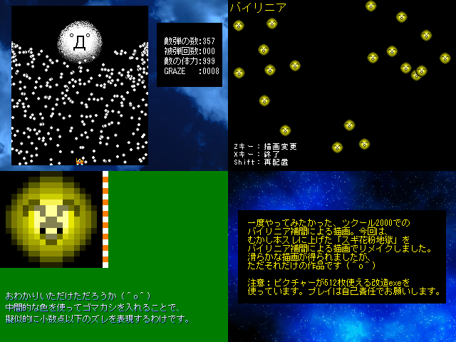

| No.63 スギ花粉地獄バイリニア |
 |
|
| 作者：ALPHA | |
| ツクール：2000 | |
| ジャンル：技術的な小ネタ | |
| 配信/投稿：自己責任/自己責任 | |
| 作者コメント： 一度やってみたかった、ツクール2000でのバイリニア補間による描画。 今回は、むかし本スレに上げた「スギ花粉地獄」を バイリニア補間による描画でリメイクしました。 滑らかな描画が得られましたが、ただそれだけの作品です (＾o＾) 注意：ピクチャーが512枚使える改造exeを使っています。 プレイは自己責任でお願いします。 |
|
| 管理人コメント： バイリニア補間でホコグラに滑らかなアクションをさせる話を前に聞いた覚えがありますね。 |
|
| ダウンロード(827KB) / 感想掲示板 | |
| 前の作品 / | |